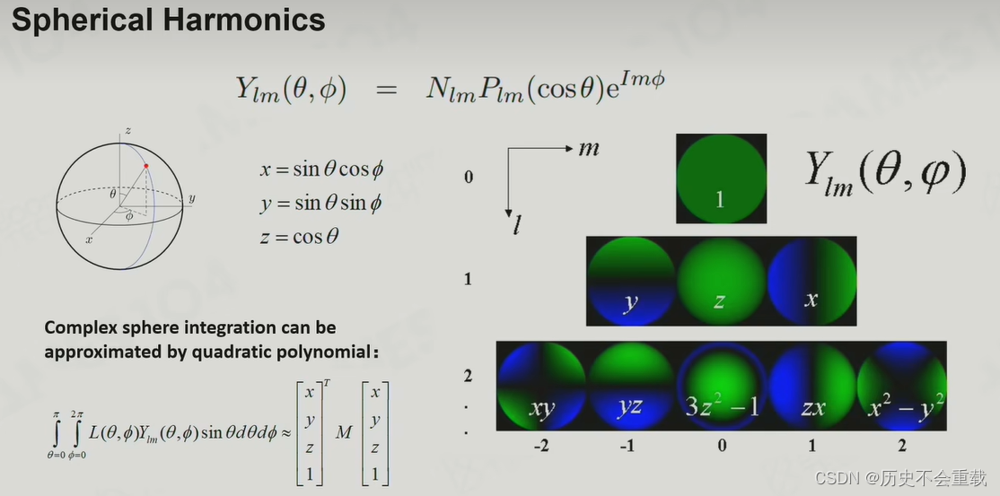

写在前面的话
这里的许多内容都直接搬运自 LearnOpenGL。
渲染方程
-
先看方程左边，其中 $x$ 为被观察的点，$w_{o}$ 表示出射方向，故$L_{o}(x,w_{o})$ 即为出射辐射量；
-
再看方程右边，$L_{e}(x,w_{o})$ 表示该点本身朝相机散发的辐射量，$\int_{H^{2}}^{}L_{i}(x,w_{i})\cos \theta_{i}dw_{i}$ 表示以 $x$ 点为球心，对球面做辐射通量的积分，结果为所有点汇集到 $x$ 点的辐射量，而 $f_{r} (x,w_{o},w_{i})$ 为从 $w_{i}$ 方向入射至 $x$ 点的辐射量以 $w_{o}$ 方向射出时留存的比例（反射率），因此 $\int_{H^{2}}^{}f_{r} (x,w_{o},w_{i})L_{i}(x,w_{i})\cos \theta_{i}dw_{i}$ 就表示外界（除 $x$ 点）辐射量（漫反射）。
基础光照解决方案
Phong Lighting Model
冯氏光照模型主要由 3 个分量组成：环境（Ambient）、漫反射（Diffuse）和镜面（Specular）光照。

-
环境光照（Ambient Lighting）：即使在黑暗的情况下，世界上通常也仍然有一些光亮（月亮、远处的光），所以物体几乎永远不会是完全黑暗的；
-
漫反射光照（Diffuse Lighting）：模拟光源对物体的方向性影响，物体的某一部分越是正对着光源，它就会越亮；
-
镜面光照（Specular Lighting）：模拟有光泽物体上面出现的亮点，镜面光照的颜色相比于物体的颜色会更倾向于光的颜色。
缺点
- 能量不守恒，出射光线的能量可能会超过入射光线的能量。
Shadow Map
-
先从光的视角获得一张场景的深度图，这个深度是场景中的点到光源的距离；
-
再将相机变换到光源的位置，计算点到相机的距离，如果大于先前的深度，则该点在阴影中。
基于预计算的全局光照
全局光照本质是对场景的球面采样。
运用傅里叶变换，可以将上述采样数据投影到频域存储，并且在计算积分时计算量更小。

由此引出了球面调和函数（Spherical Harmonics），在计算积分是时候，只需要将各阶球面调和函数进行线性组合去表示一个光照信号。

Lightmap
Lightmap 将场景中所有位置的光照存储了下来。

缺点
-
只适用于静态场景；
-
渲染时间太长。
Light Probe
Light Probe 在空间上采样出 probe，当物体移动时，会去寻找临近的 probe 进行插值来计算光照。

缺点
- 光照效果受采样点数量影响。
PBR
-
基于微平面（Microfacet）的表面模型；
-
能量守恒；
-
应用基于物理的 BRDF。
微平面模型
微平面理论认为，达到微观尺度之后任何平面都可以用被称为微平面的细小镜面来进行描绘。
而根据平面粗糙程度的不同，这些细小镜面的取向排列可以相当不一致。

因此，对于一个的平面，粗糙度越低，光线越趋向于向同一个方向反射，从而造成更小更锐利的反射。

可以定义一个中间向量（Halfway Vector）代表目标法向量，其位于光线向量 l 和视线向量 v 之间，计算方法如下：
$$h=\frac{l+v}{||l+v||} $$
而微平面的取向方向与中间向量的方向越是一致，镜面反射的效果就越是强烈越是锐利。
再加上一个介于 0 到 1 之间的粗糙度参数，就能估算微平面的取向情况了。

较高的粗糙度值显示出来的镜面反射的轮廓要更大一些。与之相反地，较小的粗糙值显示出的镜面反射轮廓则更小更锐利。
能量守恒
当一束光线碰撞到一个表面时，它就会分离成折射部分和反射部分。
-
反射部分会直接反射开而不会进入平面，它们构成了镜面光照；
-
折射部分就是余下的进入表面的光，它们中未被物体吸收而逃逸出的构成了漫反射光照。

对于金属表面而言，所有的折射部分都会被直接吸收，只留下反射部分。因此，金属表面不会显示出漫反射颜色。
在实际写 Shader 的过程中，可以如下描述光打向物体表面的过程。
float kS = calculateSpecularComponent(...); // 反射/镜面 部分
float kD = 1.0 - ks; // 折射/漫反射 部分
反射率方程
这块就是在渲染方程中提到的外界辐射量。
$$\int_{H^{2}}^{}f_{r} (x,w_{o},w_{i})L_{i}(x,w_{i})\cos \theta_{i}dw_{i}$$
如果你想更加详细了解这块知识，可以查看此文档。
BRDF
其实所谓的反射率方程过于理想化了，并没有将观察点的材质考虑在内，所以才有了 BRDF。
BRDF，或者说双向反射分布函数，它接受入射（光）方向 $w_{i}$，出射（观察）方向 $w_{o}$，平面法线 $n$ 以及一个用来表示微平面粗糙程度的参数 $a$ 作为函数的输入参数。
BRDF 基于我们之前所探讨过的微平面理论来近似的求得材质的反射与折射属性。
Cook-Torrance BRDF
Cook-Torrance BRDF 兼有漫反射和镜面反射两个部分：
$$f_{r}=k_{d}f_{lambert}+k_{s}f_{cook-torrance}$$
其中 $k_{d}$ 表示入射光线中折射部分所占的能量比率，$k_{s}$ 表示反射部分所占的能量比率。
漫反射
$f_{lambert}$ 表示漫反射（Lambertian 漫反射），用如下的公式来表示：
$$f_{lambert}=\frac{c}{π}$$
其中 $c$ 表示表面颜色，除以 $π$ 是为了对漫反射光进行标准化，因为前面含有 BRDF 的积分方程是受 $π$ 影响的。
镜面反射
$f_{cook-torrance}$ 表示镜面反射，用如下的公式来表示：
$$f_{cook−torrance}=\frac{DFG}{4(w_{o}⋅n)(w_{i}⋅n)}$$
其中，D，F 与 G 表示一种类型的函数，它们是法线分布函数（Normal Distribution Function），菲涅尔方程（Fresnel Rquation）和几何函数（Geometry Function），分别用来近似的计算出表面反射特性的一个特定部分。
-
法线分布函数：估算在受到表面粗糙度的影响下，取向方向与中间向量一致的微平面的数量；
-
几何函数：描述了微平面自成阴影的属性。当一个平面相对比较粗糙的时候，平面表面上的微平面有可能挡住其他的微平面从而减少表面所反射的光线；
-
菲涅尔方程：菲涅尔方程描述的是在不同的表面角下表面所反射的光线所占的比率。
在这里我并不想过多介绍这些函数和方程，如果你想深入了解，可以转到该文档中。
PBR Specular Glossiness
唯一的缺点是其过于的灵活，假如 Specular 参数设置不好，Fresnel 项就会发生问题。
PBR Metallic Roughness
IBL
基于图像的光照（Image based lighting）是将周围环境（立方体贴图）整体视为一个大光源。
同样是计算外界辐射量（漫反射），可以将立方体贴图的每个纹素视为一个光源。使用一个方向向量 $w_{i}$ 对此立方体贴图进行采样，我们就可以获取该方向上的场景辐照度。如此，给定方向向量 $w_{i}$ ，获取此方向上场景辐射度的方法就简化为：
vec3 radiance = texture(_cubemapEnvironment, w_i).rgb;
仔细研究反射方程，可以发现 BRDF 的漫反射 $k_{d}$ 和镜面 $k_{s}$ 项是相互独立的，因此可以将积分分成两部分：
$$L_{o}(x,w_{o})=\int\limits_{H^{2}}^{}k_{d}\frac{c}{\pi}L_{i}(x,w_{i})n\cdot w_{i}dw_{i}+\int\limits_{H^{2}}^{}k_{s}\frac{DFG}{4(w_{o}\cdot n)(w_{i}\cdot n)}L_{i}(x,w_{i})n\cdot w_{i}dw_{i}$$
同时可以将兰伯特项这个常数项移出漫反射积分：
$$L_{o}(x,w_{o})=k_{d}\frac{c}{\pi}\int\limits_{H^{2}}^{}L_{i}(x,w_{i})n\cdot w_{i}dw_{i}$$
于是得到了一个只依赖于 $w_{i}$ 的积分（假设 $x$ 位于环境贴图的中心），从而可以计算一个新的立方体贴图，它在每个采样方向（纹素）中存储漫反射积分的结果。

这个计算出的立方体贴图被称为辐照度图，它在每个采样方向 $w_{o}$ 上存储其积分结果，因此使用时可以从任何方向直接采样场景的辐照度。
总的来说，可以将其理解为场景中所有能够击中面向 $w_{o}$ 的表面的间接漫反射光的预计算总和，因此其看起来会有点像环境的平均颜色或光照图。
经典阴影方法
Cascade Shadow
现在的世界做的越来越开阔，但是光采样过来的精度往往是不够的，这样就有一种分层的想法。在近处做高精度 shadow map，当距离越来越远，shadow map 的精度越来越低。
它要注意的问题就是在不同层级之间要做插值，不然会导致随着摄像机推进会出现阴影破损的效果。还有一个问题就是，在绘制远处的 shadow map 的时候需要将整个空间都绘制一遍，这个过程明显是很耗时的。
软阴影
PCF and PCSS
PCF（Percentage Closer Filtering）现在通常运用于产生软阴影，它的基本思想是采样 shadow map 中当前像素周围的点，之后进行比较，将这些值取平均作为结果，就会得到一个从暗到亮的平滑变换过程。
由 PCF 可知，当 filter size 越大影子越软，同时这个值与投影的深度有关。
于是就有了 PCSS（Percentage Closer Soft Shadows），软阴影的产生与投影深度产生关系，是深度均值，$w$ 是产生软阴影的范围，只需要在这个范围内计算 PCF 即可获得结果。
VSSM
对于实时渲染的阴影，这里需要提到一个基于切比雪夫不等式的 VSM（Variance Shadow Mapping）。在 PCSS 中我们要对软阴影范围内的像素多次计算 PCF，而每次计算都需要对周围进行多次采样，这样十分繁琐，实际上我们只需要知道深度大于当前着色点深度的范围占整个区域的比例即可。
我们通过采样可以得到一个 filter 中所有采样点的均值和方差，通过这个可以直接获得当前像素深度值的占比。